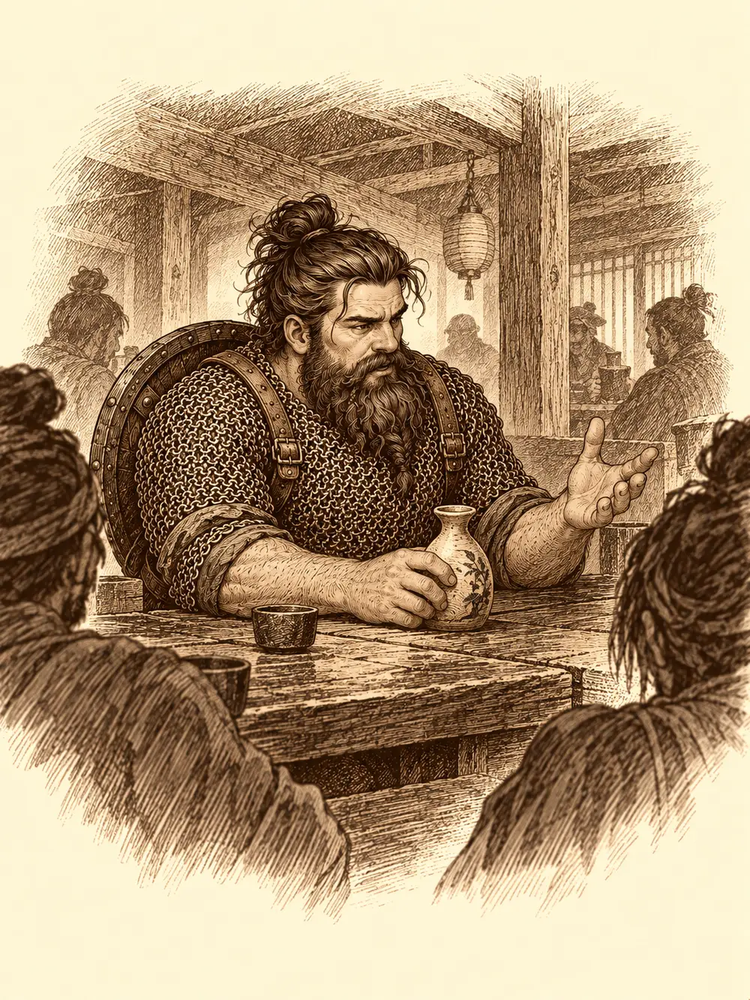

Capítulo 23
Un favor para el shogun
Libro II · El favor del shogun
Jin desapareció detrás de una montaña de papeles. Llevaba una semana escribiendo cartas al gobernador para que los contrataran de una vez como cazadores oficiales, con sueldo y con sello, y ninguna había tenido respuesta. Sobre la mesa había un mapa de Kuroto, varios borradores tachados y un tintero casi seco.
Sirth se asomó por encima de su hombro.
"¿Qué haces? Te veo muy estresado".
"¿Cuándo no me veis estresado? En cuanto os dejo un rato solos, seguro que algo se quema". Le tendió la pluma. "¿Tú sabes escribir bien?".
Sirth le arrebató la pluma, le escribió una carta de caligrafía perfecta y se la devolvió.
"¿Y por qué no vamos directamente? Tenemos un carro".
"Esas cosas necesitan cita previa".
"O no. Siempre podemos ir a ver la capital. Así me da el aire. Llevo aquí una semana entera".
Mientras tanto, cada uno andaba con lo suyo. El enano del tambor pasaba los días preguntando a los campesinos por abonos y técnicas de cultivo, decidido a que el huerto de la base creciera más que ninguno. Shiru vigilaba de vez en cuando a la fantasma de la vasija y charlaba con ella. Y Sun Gukon se había encerrado con todas las novelas románticas y los manuales de amor que había encontrado en el pueblo, y había empezado a aprender a tocar la ocarina. Lo hacía bastante mal.
En la taberna estaba Romu, el enano de la armadura de malla, con una jarra de sake. Les contó que él, Bill y Zia se habían unido al puesto de mercenarios de Kimiko. Ayudaban a quien pagara: escoltas, búsquedas, recados con espada.
Esa semana Haru repartió diez monedas a cada uno. El herrero le tenía a Shiru la daga ornamental que le había encargado. Había pedido cinco monedas por ella y Shiru le dejó quince.
Sun Gukon entró en la taberna, vio a Zia sentada con Bill y Romu y se acercó.
"Vi una luz maravillosa salir de la taberna, y quién iba a imaginar que la luz eras tú".
Zia sonrió, pero se notaba incómoda.
"Ayer no empezamos muy bien", siguió Sun. "Sé que puedo ser un poco intenso, pero es culpa tuya, por cómo me has prendido el corazón. ¿Qué tal se te dan los juegos de azar? Una partida de dados. Si gano yo, te pido un favor. Si ganas tú, me pides uno tú a mí".
"Me parece justo".
Sun sacó sus dados. Zia los apartó y puso los suyos. Sun los mezcló con mucho arte y los dejó caer. Perdió.
"Me debes un favor", dijo Zia. Señaló una mesa al otro lado de la sala. "Siéntate allí un rato".
Sun se fue a la otra mesa con la cola entre las piernas. Al pasar, los de la mesa le oyeron murmurar que aquella señora lo odiaba.
Entonces entró Shiru. Sun, sin pensárselo, sacó el bastón y se lo puso entre las piernas. Shiru tropezó, trastabilló y fue a chocar contra Romu, que lo sujetó por el brazo.
"Cuidado, hijo".
Shiru miró al suelo sin entender con qué había tropezado. Pero Shizuka, que había entrado con Sirth y el inugami y estaba sentada en una mesa del fondo, sí lo había visto. Fue hasta Sun y le tiró de la manga.
"Te he visto".
"Calla, niña, que te estoy cuidando el templo de tus padres gratis".
"¿Y por qué le haces eso a Shiru?".
"Son bromas entre amigos".
"Él no se ha reído".
Shiru llegó a la mesa de Zia, se quedó tieso, nervioso, y le tendió un paño doblado.
"Esto es para ti".
Zia lo abrió. Dentro había una daga con una funda bien cuidada y el puño decorado. A la tabaxi se le encendieron los mofletes bajo el pelo.
"Muchas gracias. No sé qué darte yo". Miró alrededor, se acordó de algo y sacó un anillo del bolsillo. "Toma. Creo que es mágico".
Era el anillo de la tierra. El que Sun le había regalado el día anterior.
Desde la otra mesa, Sun lo vio todo. Apretó la mandíbula y se tragó la rabia.
Bill, Zia y Romu se levantaron poco después. Tenían su primer trabajo de mercenarios.
El enano del tambor se llevó a Shizuka a la tienda de la madame. Le dio unas monedas para que probara suerte, y la niña volvió de la esfera con diez.
"¡He ganado!".
"Has perdido. Te he dado veinte".
"Tenía cero y ahora tengo diez".
El enano no supo qué responder a eso. Dejó treinta y cinco monedas para las reformas del local, y la niña, por imitarle, le dio sus diez a la madame.
Poco después entró Sun Gukon arrastrando los pies y se derrumbó sobre el mostrador llorando como un niño, con los mocos colgando.
"Sun, quita de la mesa, que me la vas a dejar pringada".
"La gata no me quiere. Me rechaza por la cabra".
"Ya te dije que tú no estás hecho para el amor".
Luego, el enano pasó por la herrería y le devolvió al herrero la maza de caparazón. No la manejaba bien. Le pidió que la transformara en otra arma y le adelantó treinta monedas, con otras treinta más si el resultado le gustaba.
Sirth decidió quedarse en Ukio con el bebé. Shizuka, en cambio, se pegó a Jin.
"Has dicho que puedo ir".
"No lo he dicho".
"¡Sí! ¡Y mira lo que he aprendido!". Juntó las manos, se concentró hasta ponerse roja y de la punta del dedo le salió una bolita de fuego que voló hacia Jin. Jin se apartó.
"Tiro fuego como tú".
Jin no supo si sentirse orgulloso o asustado. La dejó ir sin decírselo a Sirth.
Shiru se subió a Shizuka a caballito y ella lo agarró por los cuernos como si fueran riendas. Sun, que ya no tenía ganas de nada, se ofreció a conducir.
Fue una semana de viaje. Por el camino, el enano le enseñó a Shizuka a tocar la lira, y Sun miraba por encima del hombro para aprender algo con la ocarina, aunque cada lección le costaba una moneda.
Sho apareció al fin: una ciudad enorme y amurallada, asomada al mar sobre un espigón, con dos puertos repletos de barcos y, en el centro, el castillo del shogun, alto y escalonado, de tejados curvos. Dejaron el carro a las afueras. Los samuráis de la puerta los dejaron pasar. Las calles estaban empedradas y había tiendas que en Ukio ni existían.
Recorrieron varios negocios. Algunos estaban cerrados. En una herrería, Jin le ofreció a Shizuka escoger un arma, pero la niña blandió su espada corta delante del herrero y le dijo que ya tenía bastante.
Sun entró en una taberna, pidió lo más fuerte que tuvieran, se bebió dos vasos de un trago y se fue sin pagar. El tabernero salió detrás de él, y luego, al no alcanzarlo, se encaró con Shiru y le señaló a dos samuráis al final de la calle.
"Como no me paguen, quizá le cortan la cabeza".
Shiru pagó las dos monedas.
A las puertas del castillo, dos samuráis les cerraron el paso.
"Para ver al shogun, hay que dejar las armas".

Todas. Las espadas, la maza, el escudo, y también los panes y demás cosas que Shiru usaba para pelear. Sun se quedó fuera.
El salón era largo y estaba en penumbra. Al fondo, sobre unos cojines, se recostaba el shogun, rodeado de consejeros bien vestidos y de dos samuráis de guardia. Jin hincó una rodilla en el suelo y bajó la cabeza.
"Los cazadores de Ukio", dijo el shogun. "¿A qué debo la visita?".
Uno de los consejeros encontró entre sus papeles las cartas de Jin. El shogun las miró por encima. Jin y el enano le pidieron lo que habían ido a pedir: reconocimiento oficial y una paga por su trabajo. El shogun examinó los trofeos que habían traído y se quedó mirándolos con curiosidad.
"Tengo un problema en una casa de la ciudad", dijo al fin. "Dicen que hay un yokai, una criatura que tiende telarañas horribles. Yo no la he visto, por supuesto".
"¿Tiene forma humana?", preguntó el enano.
Los consejeros revolvieron papeles.
"Algunos dicen que sí".
"Si resolvéis eso, quizá podría hacer oficial que sois los cazadores del reino. Y pagaros. Quinientas monedas a cada uno".
"¿Me puedo llevar a la araña?".
"Haz lo que quieras con ella, mientras desaparezca de mi ciudad".
Shizuka, mientras tanto, se había metido debajo de una piel de animal que decoraba el salón y caminaba a cuatro patas con ella encima, como un disfraz.
"¿Qué es eso que se mueve bajo mi alfombra?".
Jin la sacó de allí de un tirón.
"Curiosa niña", dijo el shogun.
El enano sacó la vasija de la fantasma.
"No traemos muchos regalos, pero aquí tiene el mío. Será la única persona del reino que tenga un fantasma en un pote".
El shogun no quiso tocarla para no ensuciarse. Un sirviente la recogió y la colocó entre las rarezas de unas vitrinas. A la fantasma nadie le preguntó.
"¿Podría mandarnos algunos constructores a nuestro pueblo?", tanteó alguien.
"Eso es demasiado. Primero, el trabajito. Luego veremos".
Un consejero les marcó la casa en un mapa.
Al salir, los guardias tenían a Sun acorralado. El tabernero había ido a quejarse. Sun le dio a uno de ellos unos golpecitos en el pecho con el dedo.
"No estoy de humor para tonterías, cabeza de lata".
Los samuráis se acercaron todos a la vez.
"Nosotros tampoco, señor. Respete las normas de la ciudad".
"Disculpadlo", dijo alguien. "Es nuestra mascota. La estamos entrenando".
Anochecía cuando llegaron. La casa estaba en un barrio del norte, junto a las murallas, entre edificios cada vez más destartalados. Tenía telarañas por fuera, el tejado hundido y un olor dulzón a cosa encerrada.
Dentro había muebles rotos, armarios destrozados y telarañas por todas partes, gruesas como sábanas. En algunos rincones había huevos, racimos de huevos pálidos que temblaban como si algo estuviera a punto de salir.
Jin le prendió fuego a uno.
"Así llamamos".
Una voz bajó del techo.
"¡Malnacidos! ¿Qué habéis hecho?".
Una figura descendió colgada de un hilo. De cintura para arriba era una mujer; de cintura para abajo, una araña de ocho patas. Se posó junto al huevo en llamas y lo apagó con una de sus patas.
"Así que venís a matar a mis crías".
El enano se arrodilló delante de ella.
"Por favor, discúlpanos. No era nuestra intención. La mía no. No soy como ellos. Quiero llevarte a un lugar mejor, donde puedas criar a tus hijos tranquila. Te ofrezco la piel de un oni para el viaje".
La jorogumo lo miró.
"Habéis entrado matando a mis hijos. Eso no se perdona con palabras".
Shiru se le acercó, la distrajo con un gesto y la mujer araña, al intentar golpearle, alcanzó a sus propios huevos. Sun Gukon, que venía con ganas de pegarle a algo, se lanzó a por ella a puñetazos.
"Veis", le dijo la jorogumo al enano, que seguía de rodillas. "Mentirosos".
Lanzó un chillido. Los huevos reventaron y salieron arañas de varias clases y tamaños. Y ella se desvaneció.
Las arañas atacaban por todas partes, con mordiscos y veneno y telarañas que pegaban los pies al suelo. Jin las abría con la espada de fuego. Shiru las aplastaba con el escudo. El enano seguía pidiendo perdón a la madre invisible, con lágrimas de verdad, mientras con su música y sus palabras reforzaba a sus compañeros. Shizuka se escondió en una esquina y lanzaba bolitas de fuego desde allí, y alguna acertaba.
La jorogumo apareció de pronto en el techo, justo encima de Sun Gukon, y le cayó encima. Lo mordió, lo arañó una y otra vez, y Sun se quedó temblando, con el kimono hecho jirones y la sangre empapándole el pelo. El enano lo sostuvo con su magia para que no cayera.
Jin desapareció de donde estaba y reapareció junto a la mujer araña, y le hundió la espada. Ella le tocó el pecho con una pata y la pata brilló de un rojo apagado. Jin se quedó inmóvil, de pie, con la espada en la mano y los ojos abiertos, sin poder mover un músculo. La jorogumo trepó al techo.
Una de las arañas desaparecía y volvía a aparecer en otro sitio, como si saltara entre mundos. El enano lanzó contra todas las arañas un estruendo que las derribó a la vez, y la jorogumo, sacudida por el golpe, perdió la concentración. Jin pudo moverse otra vez. Shiru le lanzó el escudo. Sun trepó por la pared para alcanzarla.
"¡No la matéis!", gritaba el enano desde abajo. "¡Me la quiero llevar!".
Sun intentó pegarle sin matarla. La jorogumo le tocó la frente para hacerse con su voluntad, y Sun la sacudió de encima. Jin levantó la mano y la envolvió en una bola de fuego.
La mujer araña cayó del techo en llamas, chillando, y fue a parar a los brazos del enano, que se había puesto debajo para recogerla. Lo miró con odio. Luego dejó de moverse.
El enano la dejó en el suelo. Se volvió hacia Jin y extendió la mano. Jin se quedó otra vez inmóvil, paralizado. El enano le quitó la espada.
"No te la devuelvo hasta que pidas perdón".
Shizuka miró a Jin, que no se movía. Le tocó la cara.
"¿Jin? Hola".
Nada. La niña metió la mano en los bolsillos del guerrero con la destreza de quien lleva toda la vida haciéndolo y sacó diez monedas.
"¡Mira! ¡Tengo monedas!".
Cuando la parálisis se le pasó, Jin extendió la mano vacía y la espada volvió a ella sola, atraída por el vínculo que había entre los dos. Miró al enano.
"Si me la vuelves a quitar, te mato".
Sun aplastó a la última araña de un pisotón, con más rabia que necesidad. Recogieron el cadáver de la jorogumo y lo arrastraron envuelto en su propia tela.
En el castillo, el shogun se asomó con curiosidad para ver el cuerpo, como un pescador que admira la pieza de otro, y arrugó la nariz.
"Curiosa criatura. Lleváosla de mi castillo, por favor".
Hizo un gesto a sus consejeros.
"Desde hoy sois cazadores del shogun. Podréis ayudar a la gente en mi nombre. Pagadles lo acordado. Quinientas monedas a cada uno".
Salieron del castillo con la bolsa pesada y el título nuevo. El enano no miraba a Jin. Sun cojeaba con la ropa rota. Shizuka iba contando sus diez monedas una y otra vez, para que no se le olvidara ninguna.